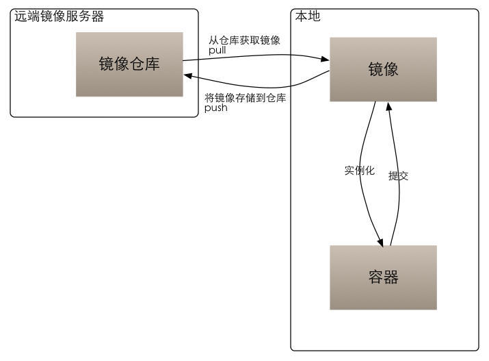

<!DOCTYPE html>
<html>
<head><meta name="generator" content="Hexo 3.9.0">
    <meta charset="UTF-8">
    <meta name="viewport" content="width=device-width, initial-scale=1, maximum-scale=1">
    
    <meta name="author" content="挥手の骑士">
    
    
    
    
    
    
    <title>使用 Docker 来部署应用 | 骑士の物语</title>
    <link href="https://yihuishou.github.io" rel="prefetch">

    <link rel="stylesheet" href="/css/bootstrap.min.css">
<link rel="stylesheet" href="/css/aos.css">
<link rel="stylesheet" href="/css/style.css">
    <script src="/js/jquery.min.js"></script>
    <script src="/js/bootstrap.min.js"></script>
    <script src="/js/aos.js"></script>
    <script src="/js/highslide/highslide-full.min.js"></script>
    <link rel="stylesheet" href="/js/highslide/highslide.css">
    <style type="text/css">
        @media (max-width: 768px) {
            body {
                background-color: #f0f0f0;
                background: url('/imgs/xsbg.gif');
                background-attachment: fixed;
            }
        }
    </style>
    
    <!--<script type="text/javascript">
      if (document.images) {
        var avatar = new Image();
        avatar.src = '/imgs/avatar.jpg'
        var previews = 'picHD_1.png,picHD_2.png,picHD_3.png,picHD_4.png,picHD_5.png,picHD_6.png,picHD_7.png,picHD_8.png,picHD_9.png,picHD_10.png,picHD_11.png,picHD_12.png,picHD_13.png,picHD_14.png,picHD_15.png,picHD_16.png,picHD_17.png,picHD_18.png,picHD_19.png,picHD_20.png,picHD_21.png,picHD_22.png,picHD_23.png,picHD_24.png,picHD_25.png,picHD_26.png,picHD_27.png,picHD_28.png,picHD_29.png,picHD_30.png,picHD_31.png,picHD_32.png,picHD_33.png,picHD_34.png,picHD_35.png,picHD_36.png,picHD_37.png,picHD_38.png,picHD_39.png,picHD_40.png,picHD_41.png,picHD_42.png'.split(',')
        var previewsPreLoad = []
        for(var i = 0; i < length; i++) {
          previewsPreLoad.push(new Image())
          previewsPreLoad[previewsPreLoad.length - 1].src = '/imgs/preview' + previews[i]
        }
      }
    </script>-->
</head></html>
<body>
    <!-- 背景轮播图功能 -->
    <section class="hidden-xs">
    <ul class="cb-slideshow">
        <li><span>天若</span></li>
        <li><span>有情</span></li>
        <li><span>天亦老</span></li>
        <li><span>我为</span></li>
        <li><span>长者</span></li>
        <li><span>续一秒</span></li>
    </ul>
</section>
    <!-- 欧尼酱功能, 谁用谁知道 -->
    
    <header class="navbar navbar-inverse" id="gal-header">
    <div class="container">
        <div class="navbar-header">
            <button type="button" class="navbar-toggle collapsed"
                    data-toggle="collapse" data-target=".bs-navbar-collapse"
                    aria-expanded="false">
                <span class="fa fa-lg fa-reorder"></span>
            </button>
            <a href="https://yihuishou.github.io">
                
                <style>
                    #gal-header .navbar-brand {
                        height: 54px;
                        line-height: 24px;
                        font-size: 28px;
                        opacity: 1;
                        background-color: rgba(0,0,0,0);
                        text-shadow: 0 0 5px #fff,0 0 10px #fff,0 0 15px #fff,0 0 20px #228DFF,0 0 35px #228DFF,0 0 40px #228DFF,0 0 50px #228DFF,0 0 75px #228DFF;
                    }
                </style>
                <!-- 这里使用文字(navbar_text or config.title) -->
                <div class="navbar-brand">骑士の物语</div>
                
            </a>
        </div>
        <div class="collapse navbar-collapse bs-navbar-collapse">
            <ul class="nav navbar-nav" id="menu-gal">
                
                
                <li class="">
                    <a href="/">
                        <i class="fa fa-home"></i>首页
                    </a>
                </li>
                
                
                
                <li class="">
                    <a href="/archives">
                        <i class="fa fa-archive"></i>归档
                    </a>
                </li>
                
                
            </ul>
        </div>
    </div>
</header>
    <div id="gal-body">
        <div class="container">
            <div class="row">
                <div class="col-md-8 gal-right" id="mainstay">
                    
<article class="article well article-body" id="article">
    <div class="breadcrumb">
        <i class="fa fa-home"></i>
        <a href="https://yihuishou.github.io">骑士の物语</a>
        >
        <span>使用 Docker 来部署应用</span>
    </div>
    <!-- 大型设备详细文章 -->
    <div class="hidden-xs">
        <div class="title-article">
            <h1>
                <a href="/2019/04/22/1749531889/">使用 Docker 来部署应用</a>
            </h1>
        </div>
        <div class="tag-article">
            
            <span class="label label-gal">
                <i class="fa fa-tags"></i>
                
                <a href="/tags/Docker/">Docker</a>
                
            </span>
            
            <span class="label label-gal">
                <i class="fa fa-calendar"></i> 2019-04-22
            </span>
            
        </div>
    </div>
    <!-- 小型设备详细文章 -->
    <div class="visible-xs">
        <center>
            <div class="title-article">
                <h4>
                    <a href="/2019/04/22/1749531889/">使用 Docker 来部署应用</a>
                </h4>
            </div>
            <p>
                <i class="fa fa-calendar"></i> 2019-04-22
            </p>
            <p>
                
                <i class="fa fa-tags"></i>
                
                <a href="/tags/Docker/">Docker</a>
                
                
                
            </p>
        </center>
    </div>
    <div class="content-article">
        <h3 id="Doker是啥"><a href="#Doker是啥" class="headerlink" title="Doker是啥"></a>Doker是啥</h3><p>轻量级虚拟化 包含了一个简易的Linux 文件系统</p>
<p>与传统的虚拟化最大的区别是更加轻量，没有了操作系统</p>
<p>只有相关应用环境和应用，主要实现了虚拟环境和应用隔离</p>
<h3 id="三要素"><a href="#三要素" class="headerlink" title="三要素"></a>三要素</h3><ul>
<li>仓库</li>
</ul>
<p>仓库 保存并管理镜像</p>
<ul>
<li>镜像</li>
</ul>
<p>镜像 由Docke引擎实例化为 容器</p>
<ul>
<li>容器</li>
</ul>
<p>容器既是运行的应用</p>
<p>容器可以构建为镜像</p>
<h3 id="Maven构建镜像"><a href="#Maven构建镜像" class="headerlink" title="Maven构建镜像"></a>Maven构建镜像</h3><p>docker的整个生命周期有三部分组成：镜像（image）+容器（container）+仓库（repository）；</p>
<p>如下图所示，容器是由镜像实例化而来，这和我们学习的面向对象的概念十分相似，我们可以把镜像看作类，把容器看作类实例化后的对象。</p>
<p>也可以说镜像是文件, 容器是进程。 容器是基于镜像创建的, 即容器中的进程依赖于镜像中的文件, 这里的文件包括进程运行所需要的可执行文件， 依赖软件， 库文件， 配置文件等等…</p>
<p></p>
<p>docker 的镜像概念类似虚拟机的镜像。是一个只读的模板，一个独立的文件系统，包括运行容器所需的数据，可以用来创建新的容器。（  docker create <strong><image-id></image-id></strong> ：为指定的镜像添加一个可读写层，构成一个新的容器；）</p>
<p>例如：一个镜像可以包含一个完整的ubuntu操作系统环境，里面仅安装了mysql或用户需要的其他应用程序。</p>
<p>docker镜像实际上是由一层一层的系统文件组成，这种层级的文件系统被称为UnionFS( Union file system  统一文件系统)，镜像可以基于dockerfile构建，dockerfile是一个描述文件，里面包含了若干条密令，每条命令都会对基础文件系统创建新的层次结构。</p>
<p>docker提供了一个很简单的机制来创建镜像或更新现有的镜像。用户甚至可以从其他人那里下载一个已经做好的镜像直接使用。（镜像是只读的，可以理解为静态文件）</p>
<p>docker利用容器来运行应用：docker容器是由docker镜像创建的运行实例。docker容器类似虚拟机，可以执行包含启动，停止，删除等。每个容器间是相互隔离的。容器中会运行特定的运用，包含特定应用的代码及所需的依赖文件。可以把容器看作一个简易版的linux环境（包含root用户权限，进程空间，用户空间和网络空间等）和运行在其中的应用程序。</p>
<p>相对于镜像来说容器是动态的，容器在启动的时候创建了一层可写层次作为最上层。（   docker create <strong><image-id></image-id></strong> ：为指定的镜像添加一个可读写层，构成一个新的容器；）</p>
<p>docker仓库：如果使用了git和github就很容易理解docker的仓库概念。docker仓库概念和git类似。</p>
<p>docker仓库是用来包含镜像的位置，docker提供了一个注册服务器（register）来保存多个仓库，每个仓库又可以包含多个具备不同tag的镜像，</p>
<p>docker运作中使用的默认仓库是docker hub公共仓库。</p>
<p>仓库支持的操作类似git，当用户创建了自己的镜像之后就可以使用push命令将它上传到共有或者私有的仓库。这样下次再另外一台机器上使用这个镜像的时候只需要从仓库里面pull下来就可以了。</p>

    </div>
</article>


                </div>
                <aside class="col-md-4 gal-left" id="sidebar">
    <!-- 此为sidebar的搜索框, 非搜索结果页面 -->
<aside id="sidebar-search">
    <div class="search hidden-xs" data-aos="fade-up" data-aos-duration="2000">
        <form class="form-inline clearfix" id="search-form" method="get"
              action="/search/index.html">
            <input type="text" name="s" class="form-control" id="searchInput" placeholder="搜索文章~" autocomplete="off">
            <button class="btn btn-danger btn-gal" type="submit">
                <i class="fa fa-search"></i>
            </button>
        </form>
    </div>
</aside>
    <aside id="sidebar-author">
    <div class="panel panel-gal" data-aos="flip-right" data-aos-duration="3000">
        <div class="panel-heading" style="text-align: center">
            <i class="fa fa-quote-left"></i>
            挥手の骑士
            <i class="fa fa-quote-right"></i>
        </div>
        <div class="author-panel text-center">
            
            <p class="author-description"></p>
        </div>
    </div>
</aside>
    
    <!-- 要配置好leancloud才能开启此小工具 -->
    
    
    <aside id="sidebar-recent_posts">
    <div class="panel panel-gal recent hidden-xs" data-aos="fade-up" data-aos-duration="2000">
        <div class="panel-heading">
            <i class="fa fa-refresh"></i>
            近期文章
            <i class="fa fa-times-circle panel-remove"></i>
            <i class="fa fa-chevron-circle-up panel-toggle"></i>
        </div>
        <ul class="list-group list-group-flush">
            
            <li class="list-group-item">
                <span class="post-title">
                    <a href="/2020/10/10/2/"></a>
                </span>
            </li>
            
            <li class="list-group-item">
                <span class="post-title">
                    <a href="/2020/08/18/55226946/">Agent v3.2.1 插件激活码</a>
                </span>
            </li>
            
            <li class="list-group-item">
                <span class="post-title">
                    <a href="/2020/07/21/2412014068/">干掉 CMS 未来属于 ZGC</a>
                </span>
            </li>
            
            <li class="list-group-item">
                <span class="post-title">
                    <a href="/2020/07/21/4075219928/">OpenJDK 和 OracleJDK 的抉择</a>
                </span>
            </li>
            
            <li class="list-group-item">
                <span class="post-title">
                    <a href="/2020/07/20/368594680/">Flutter 音乐播放器开发之路（一）</a>
                </span>
            </li>
            
            <li class="list-group-item">
                <span class="post-title">
                    <a href="/2020/07/15/3650854255/">XaaS 到底是什么？</a>
                </span>
            </li>
            
            <li class="list-group-item">
                <span class="post-title">
                    <a href="/2020/07/15/4036766117/">让 Windows 10 开机自动登录</a>
                </span>
            </li>
            
            <li class="list-group-item">
                <span class="post-title">
                    <a href="/2020/07/14/466733536/">给 Flutter 项目初始化构建提个速</a>
                </span>
            </li>
            
            <li class="list-group-item">
                <span class="post-title">
                    <a href="/2020/06/12/4125727764/">JavaScript 中 Splice 函数与数组塌陷</a>
                </span>
            </li>
            
            <li class="list-group-item">
                <span class="post-title">
                    <a href="/2020/06/12/1586694155/">在 Java 中缩写 Lambda 表达式</a>
                </span>
            </li>
            
        </ul>
    </div>
</aside>
    
    
    <aside id="sidebar-rand_posts">
    <div class="panel panel-gal recent hidden-xs" data-aos="fade-up" data-aos-duration="2000">
        <div class="panel-heading">
            <i class="fa fa-refresh"></i>
            随机文章
            <i class="fa fa-times-circle panel-remove"></i>
            <i class="fa fa-chevron-circle-up panel-toggle"></i>
        </div>
        <ul class="list-group list-group-flush">
            
            
            <li class="list-group-item">
                <span class="post-title">
                    <a href="/2019/02/20/1504490322/">ANT 通配规则</a>
                </span>
            </li>
            
            <li class="list-group-item">
                <span class="post-title">
                    <a href="/2018/01/18/3575145262/">JDK 字符串截取的坑</a>
                </span>
            </li>
            
            <li class="list-group-item">
                <span class="post-title">
                    <a href="/2019/02/28/435757353/">Java 中格式化数字的四种方式</a>
                </span>
            </li>
            
            <li class="list-group-item">
                <span class="post-title">
                    <a href="/2018/09/19/1177412043/">SpringBoot 读取配置文件中的信息</a>
                </span>
            </li>
            
            <li class="list-group-item">
                <span class="post-title">
                    <a href="/2018/08/15/1649551711/">Vue 的数据操作总结</a>
                </span>
            </li>
            
            <li class="list-group-item">
                <span class="post-title">
                    <a href="/2017/09/30/4153119184/">代码一定会变烂</a>
                </span>
            </li>
            
            <li class="list-group-item">
                <span class="post-title">
                    <a href="/2019/05/28/2206723729/">常用 Chrome 扩展</a>
                </span>
            </li>
            
            <li class="list-group-item">
                <span class="post-title">
                    <a href="/2019/06/13/1754570926/">逃离弱鸡业务循环</a>
                </span>
            </li>
            
            <li class="list-group-item">
                <span class="post-title">
                    <a href="/2019/03/08/4211700064/">Mybatis 的缺陷</a>
                </span>
            </li>
            
            <li class="list-group-item">
                <span class="post-title">
                    <a href="/2019/04/30/2948278912/">复利原理</a>
                </span>
            </li>
            
        </ul>
    </div>
</aside>
    
    
    <aside id="gal-sets">
        <div class="panel panel-gal hidden-xs" data-aos="fade-up" data-aos-duration="2000">
            <ul class="nav nav-pills pills-gal">

                
                <li>
                    <a href="/2019/04/22/1749531889/index.html#sidebar-tags" data-toggle="tab" id="tags-tab">热门标签</a>
                </li>
                
                
                <li>
                    <a href="/2019/04/22/1749531889/index.html#sidebar-friend-links" data-toggle="tab" id="friend-links-tab">友情链接</a>
                </li>
                
                
                <li>
                    <a href="/2019/04/22/1749531889/index.html#sidebar-links" data-toggle="tab" id="links-tab">个人链接</a>
                </li>
                
            </ul>
            <div class="tab-content">
                
                <div class="cloud-tags tab-pane nav bs-sidenav fade" id="sidebar-tags">
    
    <a href="/tags/SpringSecurity/" style="font-size: 12.947729804426777px;" class="tag-cloud-link">SpringSecurity</a>
    
    <a href="/tags/随笔/" style="font-size: 9.72387875379745px;" class="tag-cloud-link">随笔</a>
    
    <a href="/tags/Xml/" style="font-size: 8.826774943118995px;" class="tag-cloud-link">Xml</a>
    
    <a href="/tags/大前端/" style="font-size: 12.190824215730636px;" class="tag-cloud-link">大前端</a>
    
    <a href="/tags/Flutter/" style="font-size: 12.539238365226943px;" class="tag-cloud-link">Flutter</a>
    
    <a href="/tags/Dart/" style="font-size: 16.21763338634162px;" class="tag-cloud-link">Dart</a>
    
    <a href="/tags/Go/" style="font-size: 9.229640231166513px;" class="tag-cloud-link">Go</a>
    
    <a href="/tags/IDEA/" style="font-size: 16.63461669856618px;" class="tag-cloud-link">IDEA</a>
    
    <a href="/tags/Java/" style="font-size: 12.520500743023597px;" class="tag-cloud-link">Java</a>
    
    <a href="/tags/JavaScript/" style="font-size: 19.512189505914975px;" class="tag-cloud-link">JavaScript</a>
    
    <a href="/tags/Oracle/" style="font-size: 13.374820545026115px;" class="tag-cloud-link">Oracle</a>
    
    <a href="/tags/Photoshop/" style="font-size: 18.436248339009552px;" class="tag-cloud-link">Photoshop</a>
    
    <a href="/tags/Restful/" style="font-size: 14.386097396939196px;" class="tag-cloud-link">Restful</a>
    
    <a href="/tags/RPG-Maker-MV/" style="font-size: 14.631959760539385px;" class="tag-cloud-link">RPG Maker MV</a>
    
    <a href="/tags/SQL/" style="font-size: 19.744530692465933px;" class="tag-cloud-link">SQL</a>
    
    <a href="/tags/SpringBoot/" style="font-size: 18.613733543768653px;" class="tag-cloud-link">SpringBoot</a>
    
    <a href="/tags/Swagger/" style="font-size: 18.32884065137764px;" class="tag-cloud-link">Swagger</a>
    
    <a href="/tags/Windows/" style="font-size: 19.90923400596503px;" class="tag-cloud-link">Windows</a>
    
    <a href="/tags/Deepleanring/" style="font-size: 16.6319199909182px;" class="tag-cloud-link">Deepleanring</a>
    
    <a href="/tags/Vue/" style="font-size: 12.00087948164838px;" class="tag-cloud-link">Vue</a>
    
    <a href="/tags/Mysql/" style="font-size: 12.972992643725451px;" class="tag-cloud-link">Mysql</a>
    
    <a href="/tags/Docker/" style="font-size: 9.098365329041956px;" class="tag-cloud-link">Docker</a>
    
    <a href="/tags/Hexo/" style="font-size: 15.372482695874384px;" class="tag-cloud-link">Hexo</a>
    
    <a href="/tags/VsCode/" style="font-size: 17.380231749904542px;" class="tag-cloud-link">VsCode</a>
    
    <a href="/tags/SpringCloud/" style="font-size: 8.886246088422345px;" class="tag-cloud-link">SpringCloud</a>
    
    <a href="/tags/Redis/" style="font-size: 18.339413163721105px;" class="tag-cloud-link">Redis</a>
    
</div>
                
                
                <div class="friend-links tab-pane nav bs-sidenav fade" id="sidebar-friend-links">
    
    <li>
        <a href="http://noodlefighter.com" target="_blank">虾包</a>
    </li>
    
    <li>
        <a href="https://loli.la" target="_blank">超级叫了</a>
    </li>
    
    <li>
        <a href="https://konata9.github.io" target="_blank">吃土的小此方</a>
    </li>
    
</div>
                
                
                <div class="links tab-pane nav bs-sidenav fade" id="sidebar-links">
    
    <li>
        <a href="https://github.com/yihuishou" target="_blank">Github</a>
    </li>
    
    <li>
        <a href="https://gite.com/yihuishou" target="_blank">码云</a>
    </li>
    
    <li>
        <a href="https://www.zhihu.com/people/hei-yi-tian-shi-48" target="_blank">知乎</a>
    </li>
    
</div>
                
            </div>
        </div>
    </aside>
    
</aside>
            </div>
        </div>
    </div>
    <footer id="gal-footer">
    <div class="container">
        Copyright © 2018 挥手の骑士 Powered by <a href="https://hexo.io/" target="_blank">Hexo</a>.&nbsp;Theme by <a href="https://github.com/ZEROKISEKI" target="_blank">AONOSORA</a>
    </div>
</footer>

<!-- 回到顶端 -->
<div id="gal-gotop">
    <i class="fa fa-angle-up"></i>
</div>
</body>
<script src="/js/activate-power-mode.js"></script>
<script>

    // 配置highslide
	hs.graphicsDir = '/js/highslide/graphics/'
    hs.outlineType = "rounded-white";
    hs.dimmingOpacity = 0.8;
    hs.outlineWhileAnimating = true;
    hs.showCredits = false;
    hs.captionEval = "this.thumb.alt";
    hs.numberPosition = "caption";
    hs.align = "center";
    hs.transitions = ["expand", "crossfade"];
    hs.lang.number = '共%2张图, 当前是第%1张';
    hs.addSlideshow({
      interval: 5000,
      repeat: true,
      useControls: true,
      fixedControls: "fit",
      overlayOptions: {
        opacity: 0.75,
        position: "bottom center",
        hideOnMouseOut: true
      }
    })

    // 初始化aos
    AOS.init({
      duration: 1000,
      delay: 0,
      easing: 'ease-out-back'
    });

</script>
<script>
	POWERMODE.colorful = 'true';    // make power mode colorful
	POWERMODE.shake = 'true';       // turn off shake
	// TODO 这里根据具体情况修改
	document.body.addEventListener('input', POWERMODE);
</script>
<script>
    window.slideConfig = {
      prefix: '/imgs/slide/background',
      ext: 'jpg',
      maxCount: '6'
    }
</script>
<script src="/js/hs.js"></script>
<script src="/js/blog.js"></script>


</html>